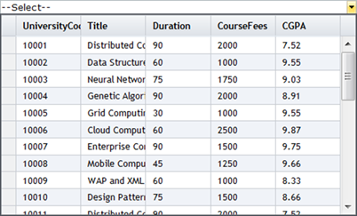

1. Create a model in the application (Refer to Getting Started>Adding a Model to the Application).
2. Create MultiColumnDropdown control in the view.
|
View [ASPX]
<%=Html.Syncfusion().MultiColumnDropDown<Student>("Multidropdown",(MultiColumnDropDownModel) ViewData["dropdown"]) %> |
|
View [cshtml] @(new HtmlString(Html.Syncfusion().MultiColumnDropDown<Student>("Multidropdown",(MultiColumnDropDownModel) ViewData["dropdown"]).ToString())) |
3. Create an instance to MultiColumnDropdownModel and assign a Datasource to the model.
|
Controller // Create instance to MultiColumnDropDownModel and assign its properties. MultiColumnDropDownModel dropdown = new MultiColumnDropDownModel() { Datasource = new StudentDataContext().JSONStudent.Skip(0).Take(30).ToList(), Text = "--Select--", DisplayExpression = new int[3] { 2, 3, 5 }, Width = 500 };
|
4. Specify the skin using the AutoFormat property.
|
Controller
// Create instance to MultiColumnDropDownModel and assign properties. MultiColumnDropDownModel dropdown = new MultiColumnDropDownModel() { Datasource = new StudentDataContext().JSONStudent.Skip(0).Take(30).ToList(), Text = "--Select--", DisplayExpression = new int[3] { 2, 3, 5 }, Width = 500, AutoFormat = Skins.Office2007Black };
|
5. Pass the model to the view using ViewData()
|
Controller
// Pass the MultiColumnDropDownModel to View using ViewData() ViewData["dropdown"] = dropdown; |
6. Run the application. The grid will appear as shown below.

Figure 307: MultiColumnDropDown Control with Office2007Black Skin